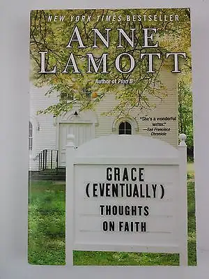

Faith Fridays

Those who’ve been frequenting this blog a while know how much I love books, how I see edifying books as life-giving, and how, when I discover a well-turned phrase, I can’t help but feel compelled to pass it on. But from time to time the opposite happens. I might scour the library or book-store shelves and pull out something that appears to be a good match for my tastes only to find the opposite is true.
I’ve read at least one other book by the oft-quoted, bestselling author Anne Lamott. Bird by Bird was an enjoyable read about the writing process. Her words in that piece resonated with me, and I assumed erroneously that anything else written by her would have a similar effect. Toward the beginning of Grace (Eventually), I was with her, enjoying her insights. I even quoted her in my last post. However, everything changed last night as I curled up in my favorite reading chair to continue on and began to detect something unnerving lurking between the eloquently fashioned phrases.
The chapter where my admiring attention began to fall away is called, “At Death’s Window.” It starts: “The man I killed did not want to die, but he no longer felt he had much of a choice. He had gone from being tall and strapping, full of appetites and a brilliant manner of speech, to a skeleton, weak and full of messy needs.” Lamott goes on to describe her offer to help her friend, Mel, who was filled with cancer, choose the day of his death; in other words, to assist him in dying whenever he deemed the time right. She goes on to describe the evening she came to his home to help him snuff out his life, how she and his wife and a friend gathered for some food and drink, how Mel was “absolutely clear as a bell, brilliant as ever” as they swapped stories in the living room, and then, how this friend who was slated to die departed into his bedroom to change into something comfortable – his death attire, if you will. Meanwhile, she slipped into the kitchen to crush the pills that would poison him to death. She described her philosophy about all this very simply: “I believe that life is a kind of Earth School…so if you’re going to be leaving anyway, who says it isn’t okay to take an incomplete in the course? In other words, what is the wrong in checking out early?”
Lamott is a Christian, and this book is supposedly a spiritual memoir of sorts. It’s interesting to note her mention of several atheist friends who, when they learned what was to go down, did not agree with her intent to interfere with the natural course of life, including hour of death. But this did not deter Lamott. She would gladly do the deed out of her great love for her friend.
The chapter ends with Lamott describing how Mel, after choking down the poison (he winced like a child taking medicine, she said) eventually just faded off, “smiled and fell asleep.” After which point those who remained “got up to stretch, to get wine or water, to change CDs. Mel breathed so quietly, for so long, that when he finally stopped, we all strained to hear the sound.”
Here is where the chapter ends, and where I began to feel sick, not to mention deceived. Lamott makes it sound so lovely, so peaceful, so innocently executed and carried out. I wasn’t completely deterred, though. I read onward a while, convinced that if I took in just a little more, perhaps I would come to better understand her mindset. But I kept coming back to the twisted feeling inside of me, and her words that Mel’s life had become too “messy,” too fraught with need. So I surrendered by quietly closing the book and going to bed, unsettled and sad.
Now, I’m sure that if I were to meet Lamott at a writer’s conference somewhere, I would find her delightful as a person. She does get some things right. But, like the rest of us, she’s human, which means imperfect, like the rest of us – like me. However, I find her casual depiction of assisted death very troubling, and there’s more where that came from in the following chapter. This articulate, well-read writer views the taking of life as one might view taking the next step in a day full of steps – one no more important than the next. Even the atheists, the non-believers, could see the error in her thinking. It’s not only a matter of faith to me (though my faith life comes into play as I consider such things), but it’s also a matter of being in sync with natural law. God has imprinted truth into our very beings by virtue of God’s nature and our nature. Whether or not we agree on the source, truth has been woven into our souls. Sometimes we are better in tune to this than at other times, and undoubtedly, we are influenced by our experiences. But once you begin to justify one wrong act, it’s so easy to justify another, and another and on and on. Think the Holocaust, decades of slavery, and so many wars. One wrong judgment reaches outward and before you know it, thousands of people who had a right to live, dead.
I know that my job is not to judge Lamott. I will leave that to God. But at the very least, I can do something about the feeling that is eating away at me because of this book – the icky feeling of poison similar to that which was in the pill she helped feed to her friend to send him on his merry way. I can take the book and close it gently. I can offer up a prayer for her and all those who truly believe that this is the way to go – that we deserve to decide whether life is valuable and who gets to determine that and at what point we should leave the earth and how.
Perhaps the reason this chapter and at least one that followed rubbed me the wrong way is that I am an eternal believer in hope. I believe that every moment of suffering we experience on earth can become an opportunity to draw closer to our Creator. In choosing whether we suffer, the extent of our suffering and when our lives or others’ lives should end, we miss opportunities to put on the mind of God, to come into closer communion with God, to find that peace that we all want, even in (and, in fact, because of) suffering. I truly believe that if Lamott would have been a true friend to Mel, instead of helping him die, she would have been by his side while he lived, even if it was uncomfortable for her and for him.
There is no tidy ending to this post, except to say that the world is full of wonderful words and ideas, and at the same time, sprinkled with a good many that drain life as well, and we must choose cautiously what we take into ourselves, and what we offer back out. I am committed to offering up life-giving words, to perpetuate a feeling of hope, to stand firmly by life, even when that life is messy and/or inconvenient.